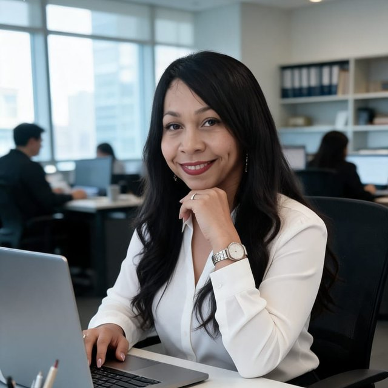
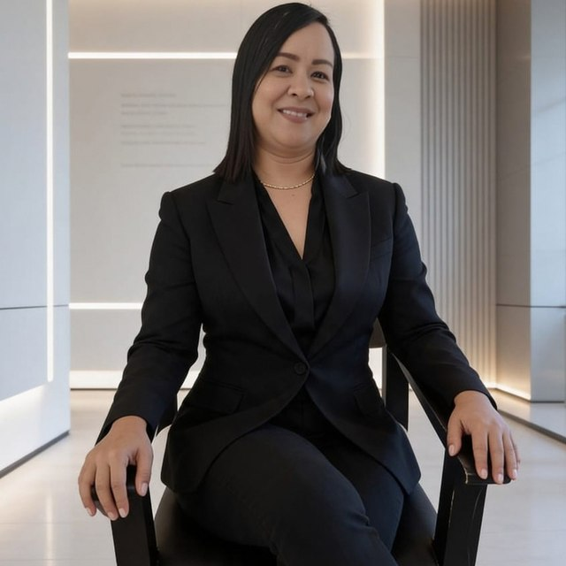
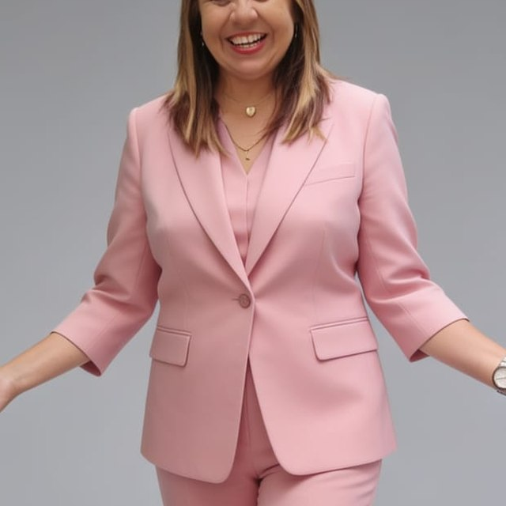

Estado Yaracuy · Venezuela · Desde 1961
La Asociación Regional de Ganaderos del Estado Yaracuy agrupa a productores de doble propósito para fortalecer la sanidad, mejorar la genética del hato regional y abrir nuevos mercados.
Nuestra labor gremial
Acompañamos al productor yaracuyano en cada etapa: desde el calendario sanitario de su hato hasta la comercialización de sus reproductores.
Líneas Brahman y Gyr con registro genealógico, evaluación de progenie y juzgamientos en ferias regionales.
Calendario de vacunación, desparasitación y control veterinario, con trazabilidad individual por animal.
Asistencia técnica en potreros por franjas para mejorar el aprovechamiento y la recuperación del suelo.
Conexión con compradores nacionales, subastas y ferias ganaderas para vender al mejor precio.
Jornadas técnicas en nutrición, reproducción y gestión, dictadas junto a especialistas del sector.
Voz institucional del ganadero yaracuyano ante los entes públicos y privados del país.
Disponibilidad actual
Ofertas verificadas por la asociación. Cada animal cuenta con documentación sanitaria y registro genealógico.
| Categoría | Raza | Edad | Disponibilidad |
|---|---|---|---|
| Toro reproductor | Brahman rojo | 3 años | 2 disponibles |
| Novilla de vientre | Gyr lechero | 18–24 meses | 12 disponibles |
| Ternero destetado | Brahman × Gyr | 8 meses | Consultar |
Con el apoyo de
Apex Evolution 4.0 desarrollo esta plataforma digital a ASOGAYA como parte de su compromiso con la transformación tecnológica del sector ganadero en Yaracuy.

Fundadora · Abogada
"Reinventarse es adoptar la tecnología que le quita el peso operativo a tu negocio."

Mentora · Lcda. en Administración
"De sobrevivir a vivir: una nueva manera de explotar nuestro potencial al máximo."

Mentora · Periodista
"Haz que la tecnología trabaje a favor de tu éxito."
Únete al gremio
Afíliate a ASOGAYA y forma parte de una red que desde 1961 trabaja por el futuro del hato venezolano.